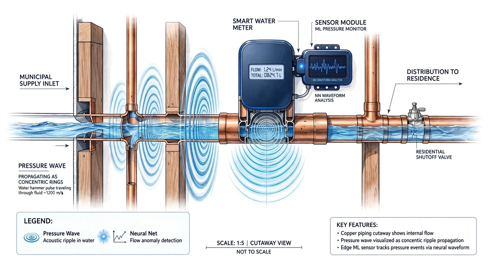

System and Method for Continuous Residential Plumbing Integrity Assessment Using Water Hammer Transient Analysis from Smart Water Meter High-Frequency Pressure Data

Abstract
Disclosed is a system and method for continuously assessing the structural integrity of residential plumbing networks by analyzing water hammer pressure transients captured at a single instrumented point, typically a smart water meter or service entry. When any valve, faucet, or appliance solenoid in a building closes rapidly, it generates a hydraulic shock wave that propagates through the entire pipe network, reflecting at every joint, tee, reducer, terminus, and defect. The system captures these transients at 2 kHz or higher sampling rates using a piezoresistive pressure sensor integrated into the water meter body. A continuous wavelet transform (CWT) decomposes each transient into a time-frequency scalogram that encodes the plumbing system's acoustic impedance topology. An edge-deployed convolutional neural network trained on labeled scalogram libraries classifies system condition across seven defect categories: loose pipe joints, internal corrosion accumulation, hidden slab leaks, failed shut-off valves, water heater sediment accumulation, thermal expansion anomalies, and near-frozen pipe segments. The system establishes a per-building baseline impedance fingerprint at installation and detects progressive degradation through time-series drift analysis of transient shape parameters, generating maintenance alerts weeks to months before catastrophic failure.
Field of the Invention
This invention relates to non-destructive structural assessment of residential plumbing systems, specifically to the use of naturally occurring hydraulic transient events as diagnostic probes analyzed through wavelet-domain machine learning at the network edge.
Background
Residential water damage is the second most common homeowner insurance claim in the United States (Insurance Information Institute), with an average claim cost of $12,514. The EPA estimates that household leaks waste approximately 1 trillion gallons of water annually in the U.S., with 10% of homes having leaks wasting 90 gallons or more per day. Most failures originate in concealed plumbing that cannot be visually inspected without demolition.
Current residential plumbing monitoring approaches have significant limitations:
- Smart water meters and flow sensors: Devices like Flume, Flo by Moen, and Phyn measure flow rate and static pressure to detect active leaks and abnormal usage patterns. These systems identify leaks only after water is escaping the system. None analyze transient pressure dynamics or perform structural assessment of the pipe network itself.
- Acoustic leak detection: Professional services use correlating hydrophones placed at two access points to triangulate leak locations by measuring the time delay of continuous leak noise. Cost: $300-800 per survey. Requires active leaks producing acoustic emissions. Cannot detect pre-failure degradation.
- Visual camera inspection: Borescope cameras inserted through cleanouts can inspect drain lines (DWV system) but cannot access pressurized supply lines. Scope is limited to the drain network, which represents less than half of a typical residential plumbing system.
Water hammer transient analysis is well-established in municipal water infrastructure:
- Liggett and Chen, Journal of Hydraulic Engineering 2002: Foundational work on inverse transient analysis (ITA) for pipeline leak detection, demonstrating that pressure transient reflections encode pipe condition information. Applied to single municipal pipelines, not branched residential networks.
- Gong et al., Mechanical Systems and Signal Processing 2018: Demonstrated that pipe wall condition changes as small as 2% wall thickness reduction produce measurable changes in transient wave speed. Laboratory conditions with controlled transient generation.
- US10401246B2 (Syrinix): Continuous transient monitoring for municipal mains using permanently installed sensors. Targets large-diameter trunk mains with known topology. Does not address branched residential plumbing or edge-deployed ML classification.
- US9494249B2 (MIT/WaterScope): Hydrant-launched transient injection for municipal pipe assessment. Requires active transient generation from fire hydrant access. Not applicable to residential interiors.
The gap in the art is a system that: (a) passively exploits naturally occurring water hammer events from normal residential fixture use as diagnostic probes, requiring no active transient generation; (b) operates from a single measurement point at the service entry; (c) uses wavelet-domain deep learning to classify pipe network condition across multiple defect categories from the complex reflection patterns in branched plumbing; and (d) tracks progressive degradation through temporal drift analysis of the building's hydraulic impedance fingerprint.
Detailed Description
1. Pressure Sensor Hardware Integration
The system integrates a high-frequency piezoresistive pressure sensor into the water meter body or installs one as an inline adapter at the service entry point. Sensor specifications: measurement range 0-200 PSI (covering both static supply pressure and transient overshoot), resolution 0.01 PSI, sampling rate 2-10 kHz (minimum 2 kHz to capture transient wavefronts with sub-millisecond features), frequency response flat to 1 kHz (-3 dB). Suitable sensors include the Honeywell TruStability SSC series (unit cost $15-25) or comparable piezoresistive MEMS pressure sensors.
The sensor connects to a processing module containing: a 16-bit ADC with anti-aliasing filter (cutoff at 40% of sample rate); a microcontroller with DSP capability (e.g., STM32H7 series with hardware FPU and 480 MHz clock); 8 MB PSRAM for storing transient event buffers (each event: ~4 seconds at 5 kHz × 16-bit = 40 KB); WiFi or LoRa radio for periodic upload of classified event summaries; and power derived from the water meter's existing battery or a small lithium cell with 3-year target life at <5 mW average draw.
2. Transient Event Detection and Capture
The system continuously monitors pressure at the sensor sample rate. A water hammer transient event is detected when the pressure derivative exceeds a configurable threshold (default: ±5 PSI within 10 ms). Upon detection, the system captures a complete transient record comprising: a 0.5-second pre-trigger buffer (capturing the steady-state pressure immediately before the event), the transient onset and primary pressure spike, the reflection and oscillation decay phase (typically 2-4 seconds in residential plumbing), and return to steady state.
A typical U.S. residence generates 20-80 detectable water hammer events per day from normal fixture operation. Sources include: quarter-turn ball valve faucets (fastest closure, strongest transient), washing machine solenoid valves (consistent, repeatable), dishwasher fill valves, toilet fill valves, ice maker solenoids, and irrigation system zone valves. The system tags each event with a source signature classifier (described in Section 4) to normalize for different excitation characteristics.
3. Wavelet Transform Decomposition
Each captured transient undergoes continuous wavelet transform (CWT) decomposition using a Morlet wavelet (center frequency 6, bandwidth parameter 2) across 64 frequency scales logarithmically spaced from 5 Hz to 1 kHz. The resulting scalogram is a 2D time-frequency representation of dimensions 64 (scales) × N (time samples), where N is typically 10,000-20,000 samples for a 2-4 second event at 5 kHz.
The CWT is chosen over the short-time Fourier transform (STFT) because residential plumbing transients contain both low-frequency components (pipe-length resonances at 10-50 Hz, corresponding to reflection round-trip times of 20-100 ms in typical homes) and high-frequency components (joint and defect reflections at 200-800 Hz) that require different time-frequency resolution tradeoffs. The CWT's dyadic scaling naturally matches this multi-scale structure.
Key scalogram features extracted for classification include: primary wave arrival time and amplitude; first reflection arrival time (encodes distance to first major impedance discontinuity); reflection coefficient magnitude at each identifiable reflection (encodes impedance mismatch severity); oscillation decay rate (Q-factor, encodes system damping which increases with joint looseness and corrosion); dominant resonant frequencies (encode pipe lengths and branch topology); and inter-harmonic energy ratios (encode pipe material and diameter transitions).
4. Source Identification and Normalization
Different fixture types generate transients with different excitation characteristics (closure time, flow rate at closure, valve type). The system classifies the transient source using a lightweight random forest classifier operating on four features: pre-event steady-state flow rate (from the host meter), transient rise time (10%-90% of peak), peak overpressure amplitude, and time-of-day (appliance cycles are temporally predictable). Classification accuracy target: >90% across 8 fixture categories after a 7-day learning period in a given home.
Source identification enables two capabilities: normalization of scalogram features by known excitation parameters (a 0.5 GPM ice maker solenoid closure produces different absolute transient amplitudes than a 3 GPM kitchen faucet, but the reflection pattern encodes the same pipe network condition); and longitudinal comparison of transients from the same source over time, isolating pipe network changes from excitation variation.
5. Edge-Deployed Defect Classification
A convolutional neural network (CNN) processes normalized CWT scalograms to classify system condition. Architecture: input layer accepting 64×256 downsampled scalograms (zero-padded or cropped to fixed temporal window); 4 convolutional blocks (32/64/128/128 filters, 3×3 kernels, batch normalization, ReLU, 2×2 max pooling); global average pooling; 256-unit dense layer with dropout (0.3); and multi-label sigmoid output layer for 7 defect categories.
The seven defect categories, each with characteristic scalogram signatures:
- Loose pipe joints: Joints with degraded solder, compression fittings losing grip, or push-fit connections backing out produce characteristic rattle harmonics in the 300-800 Hz band superimposed on the primary transient. The loose joint acts as a nonlinear reflector, generating harmonic frequencies not present in the excitation.
- Internal corrosion accumulation: Galvanic corrosion in copper-to-galvanized transitions and tuberculation in galvanized pipe reduce effective diameter and increase wall roughness. The scalogram signature is increased damping (lower Q-factor) and upward frequency shift of pipe-length resonances as wave speed changes due to reduced cross-section.
- Hidden slab leaks: A leak in a pipe embedded in a concrete slab acts as a partial reflector and energy absorber. The scalogram shows: reduced reflection amplitude from points beyond the leak, a characteristic low-frequency energy sink at the leak location, and progressive amplitude reduction over weeks as the leak grows.
- Failed shut-off valves: Gate or ball valves that have seized open or partially closed create known impedance discontinuities at their installation points. A valve that was previously transparent to transients but now produces reflections indicates internal failure (corrosion, debris, or seal degradation).
- Water heater sediment accumulation: Calcium carbonate sediment accumulating in the bottom of a tank water heater changes the tank's acoustic impedance, altering the reflection pattern from the heater as seen from the service entry. Characteristic: progressive increase in reflection amplitude from the heater branch over months, with spectral broadening as sediment thickness grows.
- Thermal expansion anomalies: Pipes experiencing repeated thermal cycling (hot water recirculation lines, improperly insulated pipes in exterior walls) develop progressive stress at constrained points. The scalogram shows slow drift in resonant frequencies correlated with water temperature, with the drift rate increasing as fastener stress increases.
- Near-frozen pipe segments: As water temperature in a pipe segment approaches freezing, the wave speed changes dramatically (from ~1,480 m/s at 20°C to ~1,402 m/s at 0°C, a 5.3% reduction). Partial ice formation further alters acoustic impedance. The system detects characteristic wave speed reductions in specific pipe branches during cold weather, enabling alerts before complete freeze and burst.
Model size after INT8 quantization: approximately 450 KB. Inference time: <100 ms per event on STM32H7 at 480 MHz. The model outputs a confidence score (0-1) for each defect category per event. Event-level classifications are aggregated over 24-hour windows using a Bayesian update rule that weights high-confidence detections more heavily, producing a daily system health report.
6. Baseline Fingerprinting and Drift Detection
During a 14-day enrollment period after installation, the system captures a baseline hydraulic impedance fingerprint of the building's plumbing network. The fingerprint consists of: a normalized average scalogram computed from the 50 highest-quality transient events (selected by SNR and source consistency); extracted feature vectors including resonant frequencies, Q-factors, reflection times, and inter-harmonic ratios; and a learned pipe network topology model mapping reflection times to approximate branch lengths and junction locations.
After enrollment, the system performs continuous drift detection by comparing each day's aggregated feature vectors against the baseline using Mahalanobis distance in the feature space. Drift exceeding 2σ in any feature triggers a "watch" state. Drift exceeding 3σ triggers a maintenance alert specifying the most probable defect category and approximate location (branch identification based on which reflection features changed).
The drift detection approach enables sensitivity to gradual degradation that would not trigger absolute threshold alarms: a joint that loosens 0.5% per month over two years produces cumulative drift easily detected by the temporal trend, even though no single day's measurement would flag an anomaly.
7. Location Estimation via Reflection Time-of-Flight
The system estimates defect locations within the pipe network using reflection time-of-flight analysis. When a new reflection appears in the scalogram (absent from baseline), or an existing reflection changes amplitude, the system computes the round-trip time from the sensor to the reflector: distance = (wave_speed × reflection_time) / 2. Wave speed is estimated from the pipe material and water temperature (both inferable from the baseline fingerprint and temperature sensor). In a typical home with copper supply lines at 20°C, wave speed is approximately 1,300-1,350 m/s (accounting for pipe wall elasticity via the Korteweg correction). A reflection at 15 ms corresponds to a defect approximately 10 meters from the sensor. Spatial resolution is limited by the transient wavefront bandwidth to approximately ±0.5 meters.
For branched networks, a single measurement point cannot unambiguously determine which branch contains the defect when two branches have similar lengths. The system addresses this through: statistical analysis across multiple transient sources (fixtures on different branches produce different excitation-to-defect path lengths), temperature correlation (hot-water branch defects show temperature-dependent wave speed changes), and usage pattern analysis (defect reflections that appear only when specific fixtures are active indicate which branch is affected).
8. Cloud Aggregation and Fleet Learning
Event summaries (classified defect probabilities, extracted features, source tags) are uploaded daily to a cloud aggregation service. Total upload volume: approximately 5-15 KB per day (feature vectors, not raw pressure data). The cloud service provides: fleet-wide model retraining using federated learning across opt-in installations (baseline fingerprints from diverse plumbing configurations improve classification generalization); geographic correlation of freeze-risk alerts with weather data; and building-age and material-type cohort analysis enabling predictive maintenance scheduling at portfolio scale for property managers and insurers.
9. Figures Description
- Figure 1: System architecture showing piezoresistive pressure sensor at service entry, edge processing module, and cloud aggregation. Residential plumbing schematic with labeled reflection points at joints, tees, reducers, appliance connections, and the street main.
- Figure 2: Example raw water hammer transient waveform from a kitchen faucet closure, showing primary pressure spike, reflection arrivals from pipe network features, and oscillation decay envelope. Annotated with time-of-flight distances to identifiable reflectors.
- Figure 3: CWT scalogram comparison: (a) healthy plumbing baseline, (b) same home after 6 months showing emerging loose joint rattle harmonics in the 400-700 Hz band, (c) same home with hidden slab leak showing reduced far-field reflection energy and low-frequency absorption.
- Figure 4: Drift detection timeline showing daily Mahalanobis distance from baseline over 18 months, with annotated events (joint loosening at month 4, corrosion onset at month 11) confirmed by subsequent physical inspection.
Claims
- A system for continuous structural integrity assessment of residential plumbing networks, comprising: a piezoresistive pressure sensor installed at a water service entry point and sampling at 2 kHz or higher; an edge processing module that detects water hammer transient events from normal fixture operation; a continuous wavelet transform processor that decomposes each transient into a time-frequency scalogram; and a convolutional neural network classifier that identifies plumbing defect conditions from scalogram features.
- The system of claim 1, wherein the system passively exploits naturally occurring water hammer events from residential fixture closures as diagnostic probes, requiring no active transient generation, controlled valve actuation, or injection of external signals into the plumbing network.
- The system of claim 1, wherein the classifier identifies defect conditions across multiple categories including loose pipe joints, internal corrosion accumulation, hidden slab leaks, failed shut-off valves, water heater sediment accumulation, thermal expansion anomalies, and near-frozen pipe segments, each characterized by distinct scalogram signatures.
- The system of claim 1, further comprising a baseline fingerprinting module that establishes a per-building hydraulic impedance fingerprint during an enrollment period and subsequently performs continuous drift detection by computing statistical distance between current feature vectors and the baseline fingerprint in a multi-dimensional feature space.
- The system of claim 4, wherein the drift detection tracks progressive plumbing degradation through temporal trend analysis of scalogram features, enabling alerts for gradual processes including joint loosening, corrosion accumulation, and sediment buildup weeks to months before acute failure.
- The system of claim 1, further comprising a source identification module that classifies which fixture or appliance generated each transient event, enabling normalization of scalogram features by known excitation parameters and longitudinal comparison of transients from the same source over time.
- The system of claim 1, further comprising a defect location estimation module that computes reflection time-of-flight from the sensor to impedance discontinuities in the pipe network, estimating defect distance from the service entry based on water temperature-corrected wave speed and the Korteweg pipe wall elasticity correction.
- A method for non-invasive residential plumbing assessment comprising: continuously sampling water pressure at a service entry point at 2 kHz or higher; detecting water hammer transient events triggered by normal fixture and appliance operation; decomposing each transient using a continuous wavelet transform to produce a time-frequency scalogram; classifying plumbing defect conditions from scalogram features using an edge-deployed neural network; and tracking progressive degradation through temporal drift analysis of a stored baseline hydraulic impedance fingerprint.
- The method of claim 8, further comprising a freeze prediction module that detects characteristic wave speed reductions in specific pipe branches correlated with ambient temperature data, generating pre-freeze alerts before ice formation and pipe burst.
- The system of claim 1, wherein classified event summaries are uploaded to a cloud aggregation service that performs federated model retraining across installations, geographic freeze-risk correlation with weather data, and cohort analysis across building age and pipe material types for portfolio-scale predictive maintenance.
Implementation Notes
Reference hardware for prototyping: Honeywell TruStability SSC series piezoresistive sensor ($20), STM32H743 Nucleo-144 development board ($25), inline 3/4" brass tee adapter with 1/8" NPT sensor port ($12). Total prototype BOM under $60 excluding enclosure. Production module target cost: $35-50 as meter OEM integration, $80-120 as retrofit inline adapter.
Training data acquisition: synthetic transient generation via EPANET hydraulic simulation with randomized residential network topologies (10,000+ configurations) augmented by field recordings from 50+ homes during controlled valve closures with known defect conditions. Transfer learning from the municipal transient analysis literature (Liggett and Chen 2002) provides domain-relevant pretrained features.
Prior Art References
- Insurance Information Institute — Homeowner insurance claim statistics, water damage frequency and cost
- EPA WaterSense — 1 trillion gallons/year household leak waste estimate
- Liggett & Chen, Journal of Hydraulic Engineering 2002 — Inverse transient analysis (ITA) for pipeline leak detection
- Gong et al., Mechanical Systems and Signal Processing 2018 — 2% wall thickness detection sensitivity from transient wave speed
- US10401246B2 (Syrinix) — Continuous transient monitoring for municipal water mains
- US9494249B2 (MIT/WaterScope) — Hydrant-launched transient injection for pipe assessment
- Flume Water — Ultrasonic flow-based leak detection for residential meters
- Flo by Moen — Flow and static pressure monitoring with automatic shutoff
- Phyn — Micro-leak detection via high-frequency pressure analysis (static, not transient)
- Honeywell TruStability SSC — Piezoresistive MEMS pressure sensor datasheet
- EPANET — EPA hydraulic network simulation software for transient modeling
- Muggleton et al., Journal of Sound and Vibration 2004 — Wave propagation in buried fluid-filled pipes, soil-pipe coupling theory